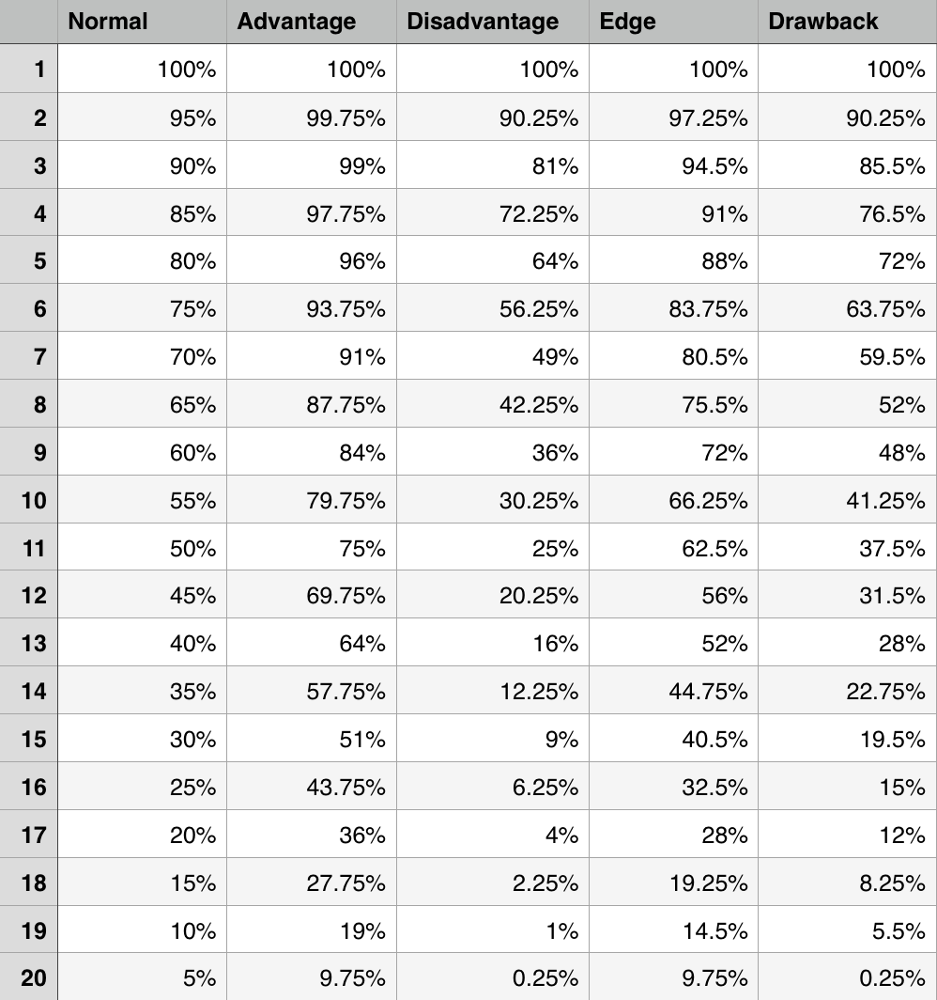

Advantage, Disadvantage, Edges, and Drawbacks
D&D 5e is out in force now. You most likely have your PHB, MM, and DMG in hand, or at least hoping Santa brings them to you.
I don’t think there is another mechanic in the new edition that has sparked as much interest or devoted so many words as Advantage[1].
Advantage’s appeal is that it’s so simple.
Too Advantageous?
However, Advantage’s (lack of) granularity might make a DM hesitant to grant it. The math behind Advantage is not linear, but it does on average grant a +4 bonus. Likewise, Disadvantage penalizes rolls by –4[2].
±4 seems too variable too me. Page 42 of the 4e DMG gives a reasonable compromise, a static bonus of ±2. But rolling the dice is so much more fun!
My compromise are what I’m calling Edges and Drawbacks:
- The player rolls 2 d20: a normal die and an Edge or Drawback die.
- If the Edge (or Drawback) die result is odd, then the roll is discarded and the original die roll is used[3].
Pretty simple. The math seems to bear out well too[4]:

Edge and Drawback Percentages
It seems to give you the ±2 bonus in the middle of the d20 targets. For example, it’s a 50% chance to roll an 11 or higher on a d20. With advantage that goes to 75%. And with an Edge, the probability is exactly in between, at 62.5%; just a little more than the +2 bonus that would increase the probability to 60% (requiring a 9 or higher). On the contrary, an Edge gives no difference to Advantage when 20 or 1 is the target.
Bookkeeping And Cancellations
Whereas with Advantage, it doesn’t matter which die you roll, an Edge does require you to specify which one is the Edge Die so that you know which one to discard if it is odd. Simple enough, just declare which one it is, much like declaring which d10 is the tens in a percentile roll.
Also, Advantage and Disadvantage cancel each other out regardless of quantities. If I have Advantage from 2 situations and Disadvantage from another situation, the rules state that no bonus is given. An Edge could be used in such a circumstance to still offer some bonus. However, I like the simplicity of the cancellation rule. I’m recommending that an Edge only be used when it is the only bonus. Likewise, Drawbacks should be used only when it is the only negative. Edges or Drawbacks shouldn’t cancel Disadvantage or Advantage respectively.
And I Would Use This How?
So where might you use an Edge? In combat I’m sure there are plenty of situations that could arise where Advantage would seem too, well, advantageous. Perhaps kicking dirt in someone’s face as a free action the first time in combat could give an Edge to the next attack? How about a skill checking when working together where the second person has a high ability score but maybe not proficiency in the skill?
In short, I plan on using it where I want to award a bonus for something clever but not outstanding.
As with all rules, this is just another tool in your GM war chest that you might be able to use from time to time.
1.
When I say Advantage, I also mean its accompanying
Disadvantage mechanic.
<a href="#fnref:1" class="reversefootnote" title="return to article"> ↩</a>
2.
The Online DM gives a good
[introduction](http://onlinedungeonmaster.com/2012/05/24/advantage-and-disadvantage-in-dd-next-the-math/)
to the math of Advantage.
<a href="#fnref:2" class="reversefootnote" title="return to article"> ↩</a>
3.
Technically it’s only discarded if the Advantage Die is higher and
even, since a lower roll wouldn’t be used anyways.
<a href="#fnref:3" class="reversefootnote" title="return to article"> ↩</a>
4.
It’s entirely possible that I’ve calculated something wrong. If so,
please correct me.
<a href="#fnref:4" class="reversefootnote" title="return to article"> ↩</a>